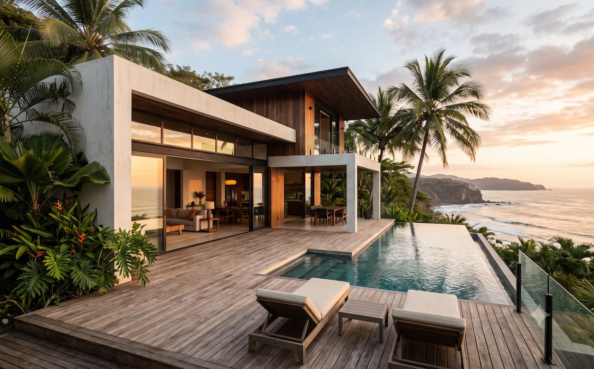
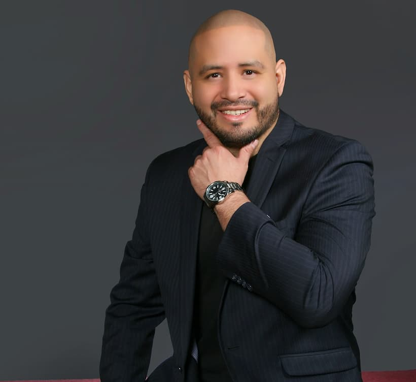
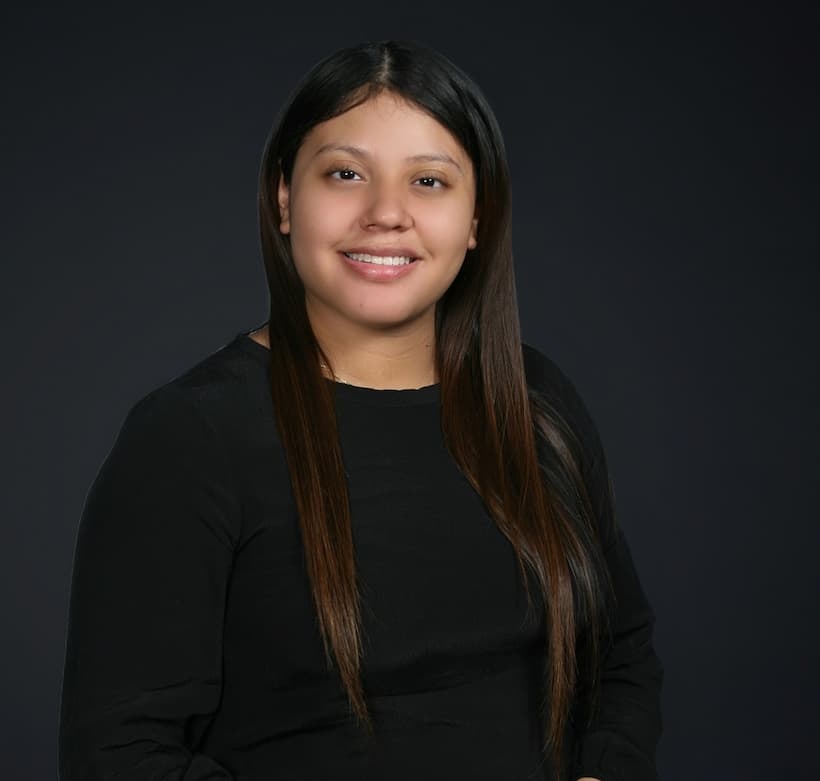
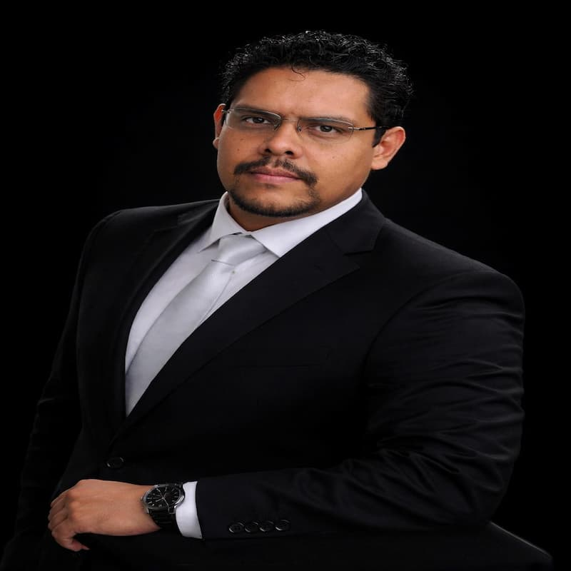
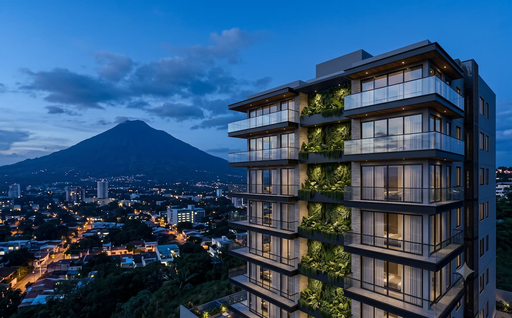
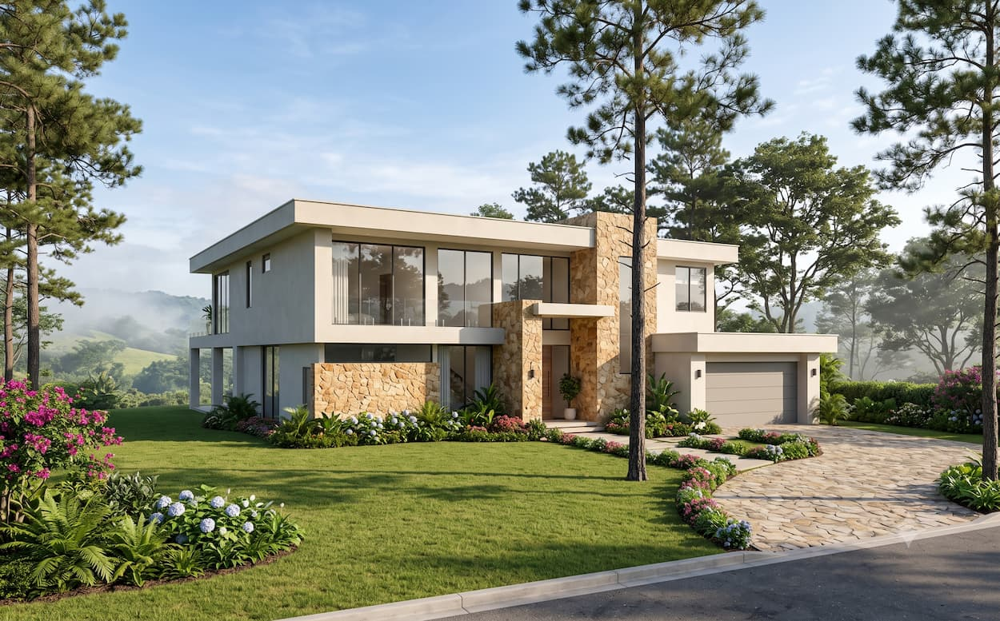
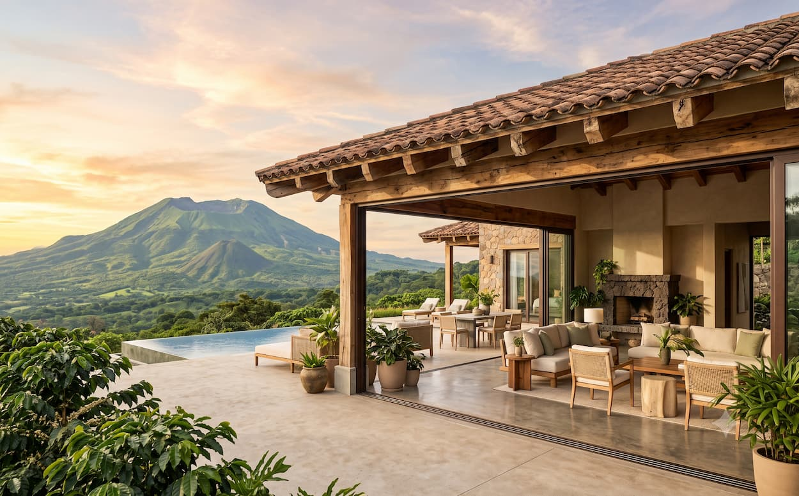
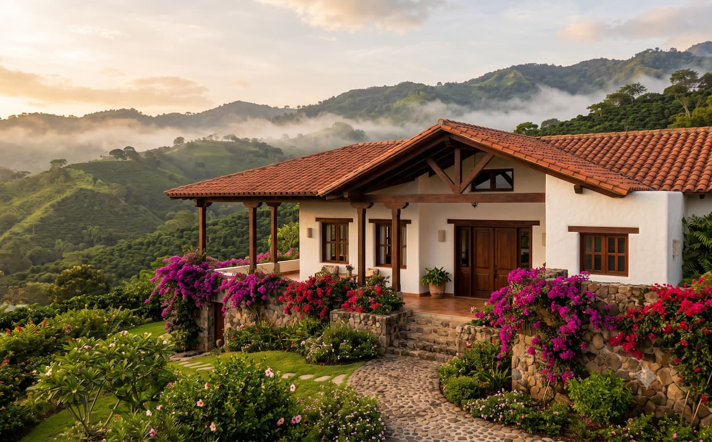
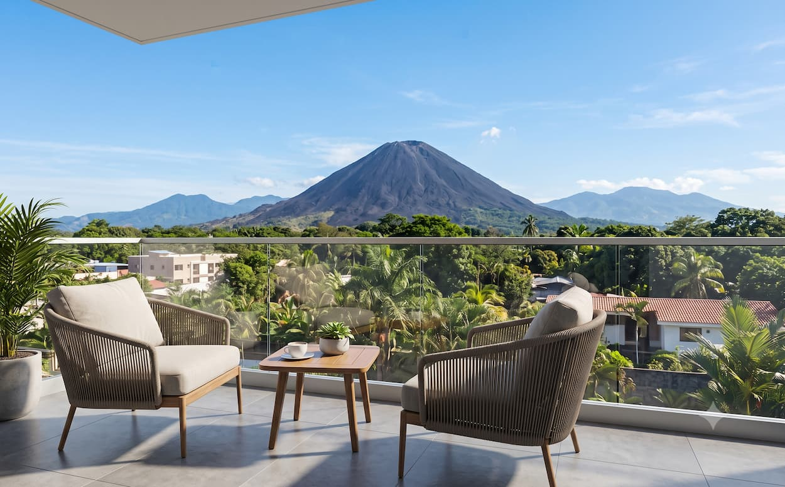
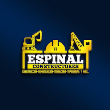

Recomendado NLDIdeal para vivir
🏖️
Retirate donde nacieron tus recuerdos. Nosotros nos encargamos de todo lo demás — sin costo para vos.
En EE.UU., el jubilado promedio gasta una buena parte de su Social Security solo en gastos médicos de bolsillo. En El Salvador, ese mismo cheque te abre puertas que en US ya no existen.
Somos salvadoreños viviendo en El Salvador. Conocemos el terreno, los desarrolladores, los abogados y las zonas. Diseñamos el proceso que quisiéramos para nuestra propia familia.



Cada persona detrás de estos números tuvo un momento en que dijo "ya no más". Aquí están sus historias, con su permiso.






No todos quieren renta larga. Algunos prefieren que su propiedad se pague sola con turistas mientras la usan cuando quieren. Nosotros la operamos por vos.
Constructoras y proveedores de servicios complementarios verificados por nuestro equipo. Si te interesa contactar a alguno, hacelo directamente desde aquí.

Empresa con 16 años de experiencia en el sector. Su trayectoria incluye el desarrollo de gasolineras, construcción de viviendas, lotificaciones, edificios, topografías y remodelaciones, entre otros proyectos. Aliada estratégica de Next Level Demographic en el acompañamiento a inversores de la diáspora.
Si tienes una pregunta que no está aquí, escríbenos por WhatsApp y te responde un asesor directamente.
Un asesor revisará tu consulta y te contactará en español por WhatsApp, llamada o videollamada dentro de 24 horas.
¿Prefieres respuesta inmediata? Escríbenos por WhatsApp ahora.
Abrir WATú tienes los proyectos. Nosotros tenemos acceso directo a 2.3M de salvadoreños en EE.UU. con poder adquisitivo y conexión emocional al país.